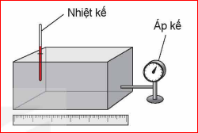
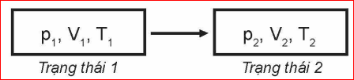
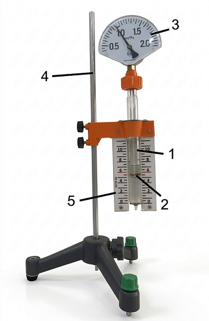
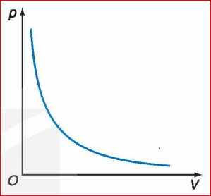
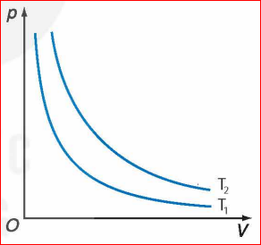

Khi thay đổi thể tích của một khối lượng khí xác định ở nhiệt độ không đổi thì áp suất khí thay đổi như thế nào?
Một lượng khí đựng trong một bình kín được xác định bởi bốn đại lượng là khối lượng (\(m\)), thể tích (\(V\)), nhiệt độ (\(T\)) và áp suất (\(p\)).
📌 ĐỊNH NGHĨA & TÍNH CHẤT:

Hình 9.1. Xác định các thông số trạng thái của một lượng khí
Hình 9.2. Trạng thái và quá trình❓ 1. Người ta dùng các dụng cụ nào để đo, xác định các thông số trạng thái của lượng khí trong hộp kín ở Hình 9.1?
❓ 2. Nêu tên đơn vị của các đại lượng này trong hệ SI.
Khí chuyển từ trạng thái này sang trạng thái khác bằng các quá trình biến đổi trạng thái, gọi tắt là quá trình.
Người ta thường biểu diễn trạng thái và quá trình biến đổi trạng thái của một khối lượng khí xác định theo sơ đồ:
EM CÓ BIẾT?
Các phân tử khí chuyển động hỗn loạn, không ngừng nên vận tốc và số va chạm của các phân tử khí lên thành bình thay đổi theo thời gian và áp suất chất khí tác dụng lên thành bình tại các thời điểm khác nhau có thể khác nhau. Do đó, áp suất chất khí được hiểu là áp suất trung bình của các phân tử khí tác dụng lên thành bình.
❓ Hãy so sánh các thông số trạng thái của không khí trong một quả bóng bay đã được bơm khi để trong bóng mát và khi để ngoài nắng (Hình 9.3).
Khi đưa quả bóng từ trong bóng mát (a) ra ngoài nắng (b):
Trong hầu hết các quá trình biến đổi trạng thái của một khối lượng khí xác định thì cả ba thông số trạng thái (\(p, V, T\)) đều có thể biến đổi. Tuy nhiên, để thuận lợi cho việc tìm hiểu mối quan hệ giữa các thông số trạng thái, người ta thực hiện những quá trình đơn giản trong đó chỉ có hai thông số biến đổi còn một thông số không đổi, gọi là các đẳng quá trình.
Quá trình đẳng nhiệt: Quá trình biến đổi trạng thái của một khối lượng khí xác định khi nhiệt độ giữ không đổi được gọi là quá trình đẳng nhiệt.
Chuẩn bị: Bộ thí nghiệm về chất khí gồm:
Tiến hành: Bố trí thí nghiệm như Hình 9.4. Dịch chuyển từ từ pit-tông để làm thay đổi thể tích khí. Đọc và ghi kết quả thí nghiệm vào Bảng 9.1.

Hình 9.4. Thí nghiệm về quá trình đẳng nhiệtBảng 9.1. Ví dụ về kết quả thí nghiệm khảo sát mối quan hệ của thể tích và áp suất trong quá trình đẳng nhiệt của một lượng khí xác định
| Lần thí nghiệm | \(V (\text{cm}^3)\) | \(p (10^5 \text{ Pa})\) | Tích \(p \cdot V (10^5 \text{ Pa}\cdot\text{cm}^3)\) |
|---|---|---|---|
| 1 | 3,0 | 1,0 | 3,0 |
| 2 | 2,5 | 1,2 | 3,0 |
| 3 | 2,0 | 1,5 | 3,0 |
| 4 | 1,5 | 1,9 | 2,85 (\(\approx 3,0\)) |
❓ Từ kết quả thí nghiệm ở Bảng 9.1, hãy:
Trả lời:
1. Tích \(p \cdot V\) ở các lần thí nghiệm xấp xỉ không đổi: \(p \cdot V \approx 3,0 \times 10^5\text{ Pa}\cdot\text{cm}^3\).
2. Trong hệ tọa độ \((p, V)\), đồ thị có dạng một nhánh đường Hypebol cong xuống.
3. Phát biểu: Trong quá trình đẳng nhiệt của một khối lượng khí xác định, áp suất tỉ lệ nghịch với thể tích.
📜 ĐỊNH LUẬT BOYLE:
Khi nhiệt độ của một khối lượng khí xác định giữ không đổi thì áp suất gây ra bởi khí tỉ lệ nghịch với thể tích của nó:
Định luật được nhà vật lí và hóa học người Ireland là Robert Boyle (1627-1691) tìm ra bằng thực nghiệm năm 1662.

Hình 9.5. Đường đẳng nhiệt (nhánh Hypebol)
Hình 9.6. Các đường đẳng nhiệt ở nhiệt độ khác nhau (\(T_1 < T_2\))Đồ thị biểu diễn định luật Boyle trong hệ tọa độ \((p, V)\) là một nhánh của đường hypebol (Hình 9.5). Đường đẳng nhiệt của cùng một lượng khí ứng với các nhiệt độ khác nhau thì khác nhau. Đường ở trên ứng với nhiệt độ cao hơn (\(T_2 > T_1\)) (Hình 9.6).
❓ 1. Nếu vẽ đường biểu diễn sự phụ thuộc của \(p\) vào \(\frac{1}{V}\) thì đường biểu diễn sẽ có dạng như thế nào? Tại sao?
Đường biểu diễn sự phụ thuộc của \(p\) vào \(\frac{1}{V}\) có dạng là một đường thẳng kéo dài đi qua gốc tọa độ \(O\).
Giải thích: Vì \(p \cdot V = k \Rightarrow p = k \cdot \left(\frac{1}{V}\right)\) (với \(k\) là hằng số). Công thức này có dạng hàm số bậc nhất \(y = k \cdot x\) với \(x = \frac{1}{V}\), nên đồ thị là đường thẳng qua gốc tọa độ.
❓ 2. Tìm ví dụ về quá trình đẳng nhiệt trong đời sống.
📝 BÀI TẬP VÍ DỤ (SGK):
Một lượng khí có thể tích là \(10\text{ lít}\) ở áp suất \(10^5\text{ Pa}\). Tính thể tích của lượng khí này ở áp suất \(1,25 \times 10^5\text{ Pa}\). Biết nhiệt độ của khí không đổi.
Các bước giải:
1. Xác định quá trình: Đây là bài toán về quá trình đẳng nhiệt.
2. Các trạng thái:
3. Áp dụng định luật Boyle:
\[ p_1 \cdot V_1 = p_2 \cdot V_2 \implies V_2 = \frac{p_1 \cdot V_1}{p_2} = \frac{10^5 \times 10}{1,25 \times 10^5} = 8\text{ (L)} \]
💪 BÀI TẬP VẬN DỤNG SGK:
1. Một quả bóng chứa \(0,04\text{ m}^3\) không khí ở áp suất \(120\text{ kPa}\). Tính áp suất của không khí trong bóng khi làm giảm thể tích bóng còn \(0,025\text{ m}^3\) ở nhiệt độ không đổi.
Lời giải:
Trạng thái 1: \(V_1 = 0,04\text{ m}^3\), \(p_1 = 120\text{ kPa}\).
Trạng thái 2: \(V_2 = 0,025\text{ m}^3\), \(p_2 = ?\)
Áp dụng định luật Boyle cho quá trình đẳng nhiệt:
\[ p_1 \cdot V_1 = p_2 \cdot V_2 \implies p_2 = \frac{p_1 \cdot V_1}{V_2} = \frac{120 \times 0,04}{0,025} = 192\text{ (kPa)} \]
2. Một bọt khí nổi từ đáy giếng sâu \(6\text{ m}\) lên mặt nước. Khi lên tới mặt nước, thể tích của bọt khí tăng lên bao nhiêu lần? Coi áp suất khí quyển là \(p_0 = 1,013 \times 10^5\text{ Pa}\); khối lượng riêng của nước giếng là \(\rho = 1000\text{ kg/m}^3\), gia tốc trọng trường \(g = 9,8\text{ m/s}^2\) và nhiệt độ của nước giếng không thay đổi theo độ sâu.
Lời giải:
Áp suất ở đáy giếng (ở độ sâu \(h = 6\text{ m}\)):
\[ p_1 = p_0 + \rho \cdot g \cdot h = 1,013 \times 10^5 + 1000 \times 9,8 \times 6 = 101300 + 58800 = 160100\text{ (Pa)} \]
Áp suất tại mặt nước: \(p_2 = p_0 = 101300\text{ Pa}\).
Vì nhiệt độ không đổi, theo định luật Boyle:
\[ p_1 \cdot V_1 = p_2 \cdot V_2 \implies \frac{V_2}{V_1} = \frac{p_1}{p_2} = \frac{160100}{101300} \approx 1,58\text{ (lần)} \]
Kết luận: Thể tích bọt khí tăng khoảng 1,58 lần khi lên tới mặt nước.
■ Trạng thái và quá trình biến đổi trạng thái:
Trạng thái 1 (\(p_1, V_1, T_1\)) \(\xrightarrow{\text{Quá trình}}\) Trạng thái 2 (\(p_2, V_2, T_2\))
■ Định luật Boyle:
Khi nhiệt độ của một khối lượng khí xác định giữ không đổi thì áp suất gây ra bởi khí tỉ lệ nghịch với thể tích của nó:
Dùng định luật Boyle giải thích được các hiện tượng thực tế đơn giản có liên quan.
Chinh phục 10 câu hỏi củng cố về Định luật Boyle & Đẳng nhiệt!
Câu 1: Quá trình đẳng nhiệt là quá trình biến đổi trạng thái trong đó:
Câu 2: Hệ thức nào sau đây thể hiện đúng định luật Boyle?
Câu 3: Đồ thị biểu diễn đường đẳng nhiệt trong hệ tọa độ (p, V) có dạng là:
Câu 4: Ba thông số trạng thái của một lượng khí bao gồm:
Câu 5: Khi nén đẳng nhiệt một khối lượng khí xác định làm thể tích giảm 2 lần thì áp suất của khí sẽ:
Câu 6: Đồ thị biểu diễn sự phụ thuộc của p vào 1/V trong quá trình đẳng nhiệt có dạng là:
Câu 7: Đối với cùng một khối lượng khí xác định, đường đẳng nhiệt nằm phía trên trong hệ (p, V) ứng với nhiệt độ:
Câu 8: Một lượng khí ở thể tích 4 L, áp suất 1 atm. Nếu nén đẳng nhiệt thể tích giảm còn 2 L thì áp suất mới là:
Câu 9: Trong thí nghiệm khảo sát định luật Boyle, điều kiện để giữ cho nhiệt độ của khí không đổi là:
Câu 10: Đơn vị nào sau đây KHÔNG PHẢI là đơn vị của áp suất?
Bài 1:
Một lượng khí lý tưởng ở áp suất \(1,5 \times 10^5\text{ Pa}\) chiếm thể tích \(12\text{ lít}\). Dùng xilanh nén lượng khí này ở nhiệt độ không đổi cho đến khi áp suất đạt \(4,5 \times 10^5\text{ Pa}\). Tính thể tích lúc sau của lượng khí.
Lời giải:
Trạng thái 1: \(p_1 = 1,5 \times 10^5\text{ Pa}\), \(V_1 = 12\text{ L}\).
Trạng thái 2: \(p_2 = 4,5 \times 10^5\text{ Pa}\), \(V_2 = ?\)
Do quá trình là đẳng nhiệt, áp dụng định luật Boyle:
\[ p_1 \cdot V_1 = p_2 \cdot V_2 \implies V_2 = \frac{p_1 \cdot V_1}{p_2} = \frac{1,5 \times 10^5 \times 12}{4,5 \times 10^5} = 4\text{ (lít)} \]
Đáp số: \(4\text{ lít}\).
Bài 2:
Một xilanh chứa \(150\text{ cm}^3\) không khí ở áp suất \(10^5\text{ Pa}\). Nén pit-tông làm cho thể tích khí giảm bớt \(50\text{ cm}^3\) ở nhiệt độ không đổi. Tính áp suất của khối khí sau khi nén.
Lời giải:
Trạng thái 1: \(V_1 = 150\text{ cm}^3\), \(p_1 = 10^5\text{ Pa}\).
Trạng thái 2: Do giảm bớt \(50\text{ cm}^3\) nên thể tích còn lại là:
\[ V_2 = V_1 - \Delta V = 150 - 50 = 100\text{ (cm}^3\text{)} \]
Áp dụng định luật Boyle:
\[ p_1 \cdot V_1 = p_2 \cdot V_2 \implies p_2 = \frac{p_1 \cdot V_1}{V_2} = \frac{10^5 \times 150}{100} = 1,5 \times 10^5\text{ (Pa)} \]
Đáp số: \(1,5 \times 10^5\text{ Pa}\).
Bài 3:
Mỗi lần bơm, bóng nhận được \(100\text{ cm}^3\) không khí ở áp suất khí quyển \(1\text{ atm}\). Người ta dùng bơm này để bơm một quả bóng có thể tích không đổi là \(2\text{ lít}\). Ban đầu bóng không chứa không khí. Tính áp suất bên trong bóng sau 50 lần bơm, coi nhiệt độ không đổi trong suốt quá trình bơm.
Lời giải:
Đổi đơn vị: \(2\text{ lít} = 2000\text{ cm}^3\).
Sau 50 lần bơm, tổng thể tích không khí ở áp suất khí quyển \(p_1 = 1\text{ atm}\) đã đưa vào bóng là:
\[ V_1 = 50 \times 100\text{ cm}^3 = 5000\text{ cm}^3 \]
Toàn bộ lượng khí này khi nén vào trong bóng sẽ chiếm thể tích \(V_2 = 2000\text{ cm}^3\).
Coi nhiệt độ không đổi, áp dụng định luật Boyle:
\[ p_1 \cdot V_1 = p_2 \cdot V_2 \implies p_2 = \frac{p_1 \cdot V_1}{V_2} = \frac{1 \times 5000}{2000} = 2,5\text{ (atm)} \]
Đáp số: \(2,5\text{ atm}\).